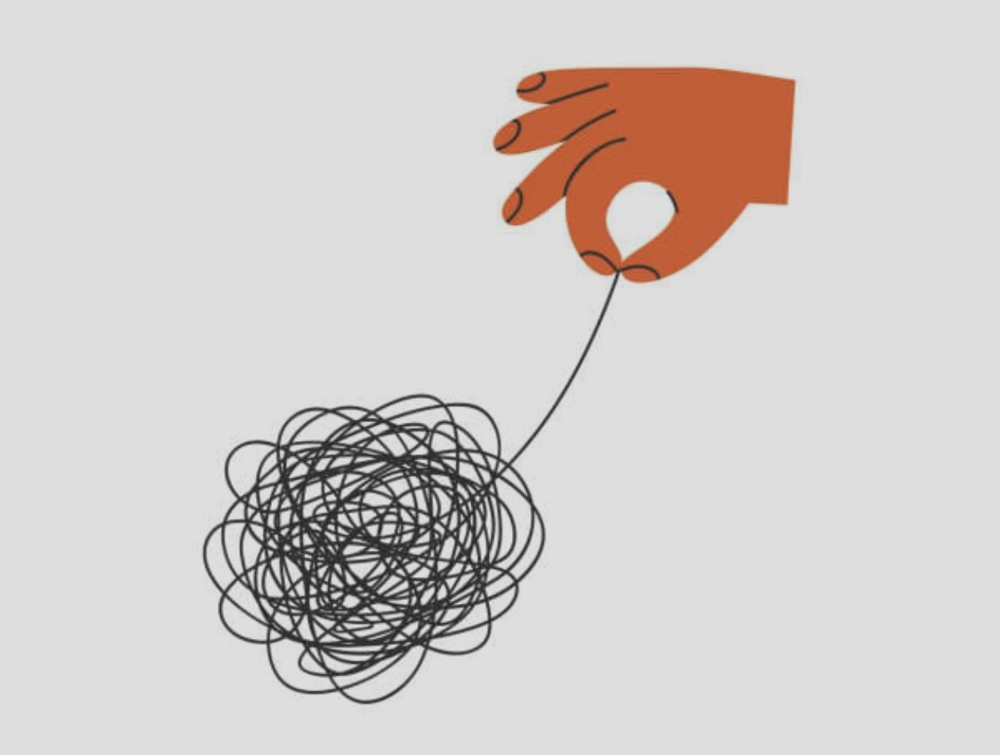

Unraveling: The Work Before the Work

Before you can stay consistent, you have to decide what deserves your consistency. This is about the work that comes before the work.
Most people think consistency is about willpower. I think it's about honesty.
The Myth
We're taught that consistency is a discipline problem. That if we just had more willpower, motivation, or the right system, we could stick with anything. Self-help books promise frameworks. Apps promise tracking. Everyone promises that if we just try hard enough, we'll finally be consistent.
But that completely misses the point.
Consistency is about clarity, not discipline. And most people never get clear before they start building systems.
The Real Barrier
People are consistent about what actually matters to them. Not what they think should matter. Not what looks good online. The things that genuinely align with their values.
When I was 30 pounds overweight and lost my job, something broke open in me. I'd built my identity on working hard, believing effort always paid off. But I'd worked hard and still lost my job. So what was I actually chasing?
At first, I was terrified. Fear got me moving, but fear doesn't last. What did last was what came next: clarity. I started asking, what actually matters to me?
The answer was simple: I wanted to be the strongest version of myself for my wife. For my future kids. I wanted to move through life without regret. Once that clicked, showing up wasn't a battle of willpower — it was just what I did. The consistency came after the clarity, not before.
Why We Fail
Most people have it backward. They pick something to be consistent about because it looks appealing, then try to build willpower around it. And for a while, it works — until it doesn't. Not because they're weak, but because they were never asking the right question.
The right question isn't "How do I stay consistent?" It's "What matters to me enough that I'll show up even when it's hard?"
If you can't answer that, no system will save you. You'll hit a day where the system feels like a cage and you'll quit — then feel guilty and start over. Not because you lack discipline, but because you never truly believed it mattered.
The Hard Work Comes First
Before you build systems, get honest about your priorities. Not your aspirational ones — your real ones. Where do you spend your time? Your money? What would you do even if nobody was watching?
Here's the tricky part: many of us don't actually know what we want. We've been chasing borrowed goals — what our parents wanted, what society told us to want, what looked impressive. So the first step isn't building a new routine. It's unraveling.
I spent six months in therapy doing exactly that. Sitting with uncomfortable questions, challenging inherited beliefs, separating what I actually cared about from what I thought I should. It was messy, painful, and necessary. By the end, I could finally answer "What actually matters to me?" with honesty instead of performance.
The uncomfortable truth is this: you can't be consistent about everything. You have finite energy, time, and attention. You have to choose. And most people never do. They try to be consistent in health, career, relationships, and hobbies all at once, and wonder why they're exhausted.
When You Know Your Why
Once you know what actually matters — truly matters — something shifts. You stop negotiating with yourself. You stop wondering if today's the day you skip. You show up because the alternative, not showing up, feels worse.
This is alignment. When your actions match your values, consistency stops being a heroic act. It becomes a natural expression of who you are.
I think about the genuinely consistent people I know. Not influencers or hustle gurus. The quiet ones. The parent who shows up for their kids — not to optimize parenting, but because being there is non-negotiable. The colleague who delivers steady work every week — not from obsession, but because reliability is part of their identity. They're not white-knuckling through discipline. They've just decided these things are who they are.
Pick Your Why
Before you build another system, before you download another app, before you commit to another habit — stop. Get clear on what actually matters. Not what should matter. Not what looks good. What truly aligns with who you want to be.
Once you know that, consistency becomes simpler — not effortless, but anchored.
Life will still get messy. You'll still miss days. But clarity removes the biggest barrier: the internal conflict of fighting yourself. You're no longer pushing uphill. You're moving in a direction that makes sense to you. It won't always be easy. But it will be honest. And that's what lasts.